Kashmir On Ground is a premium Travel agency, helping you to explore the real Beauty of Kashmir, bringing to you a range of premium packages. From the most economical one to the most lucritive one, we offer it all. So, what are you waiting for? Plan your travel, Now.
Travel Packages
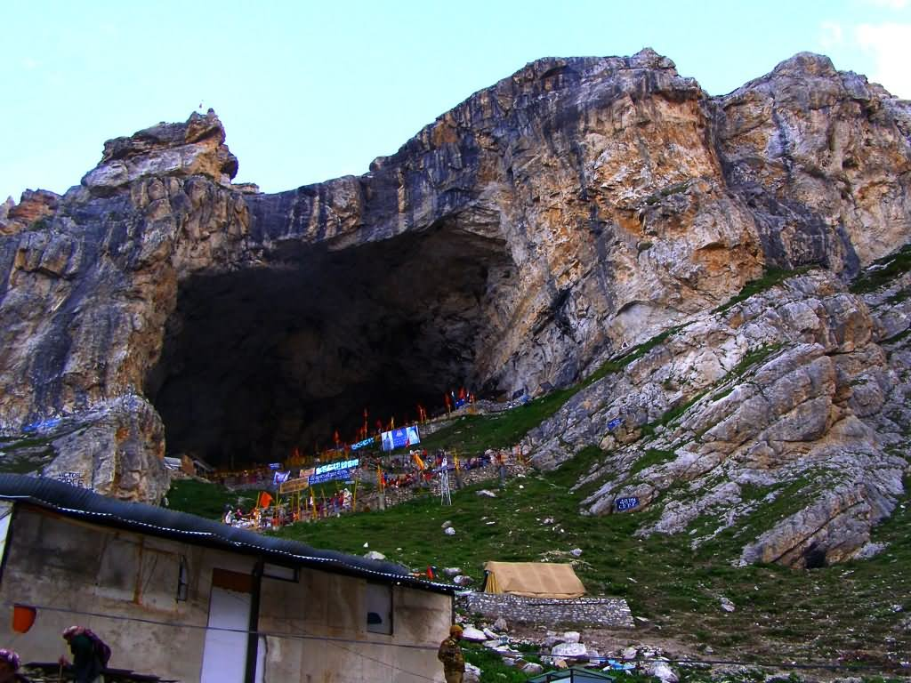 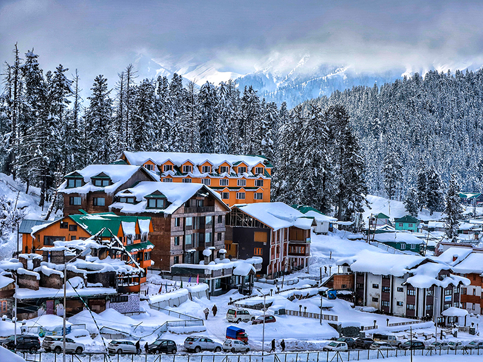 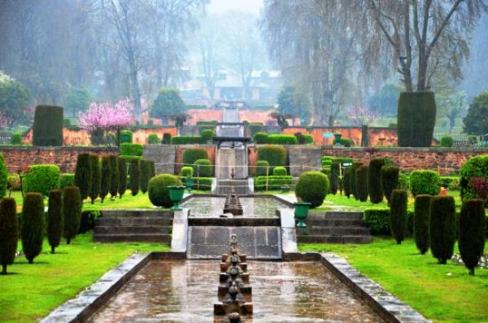Gulmarg Glimpses Itinerary
Day 1: Board the Gondola at the cable station at Gulmarg that will take you up to Kongdori at an altitude of 3099.6 meters, it is almost a vertical, upright ride that lasts for about 10 minutes. The ride goes through tall fir trees and opens out to grassy slopes below, dotted with wildflowers or snow, during winters. To know about timings, price and other related information try Gulmarg Gondola page.
At the Kongdori station, if it isn’t hazy or cloudy, get astounded by the alluring views of the Nanga Parbat looming majestically in the distance. You may also be able sight the peaks of K2 on a clear day. Ask the locals here to point the LOC, which is clearly visible from here. The mesmerising snow peaks seem close enough to touch here.
At Kongdori, there is a small eatery where you can stop for lunch. The eatery or Dhaba serves yummy local cuisine along with snacks. You can also get your lunch packed from your hotel as there are not many options for eating here. The phase 2 of the Gondola ride will take you to Apharwat. The majestic views of the lush hilly terrain and picturesque surroundings is truly a sight to behold. The ride also passess over Khilanmarg, a meadow adorned with colourful flowers. Once you reach Apharwat, you can enjoy the beautiful Apharwat peak and Alpather lake. Surrounded by snowy mountains and a calm, this place transports to a totally different world, miles and miles away from the daily chaos of the city life. The views from the top of the Apharwat peak are truly spectacular and comprise the panoramic views of Gulmarg and the surrounding valleys. Dig into all that powdery snow or go for a fun snow-fight or simply make your own interesting versions of snowman, in short create wonderful memories of a lifetime with your loved ones.
The beauty of the snow clad peaks is reflected in the serene waters of Alpather Lake. Situated at the foot of the twin 4511 m Alpather peaks, this beautiful alpine lake remains frozen until June. The lake can be reached by a well-graded track on the back of a pony. Even when the lake has melted, you can still see it flecked with floating ice pieces. With the backdrop of alluring snow-capped peaks, it makes for an ideal picnic spot. To know about how to reach and contact details see Alpather lake. After you have soaked in the beauty and tranquility of this place, you can go back to your hotel via Gondola for dinner and rest for the day. 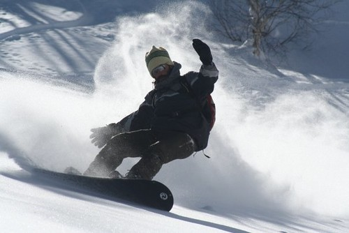Day 2:
If you are in Gulmarg then it goes without saying that do not forget to indulge in the best of all snow adventure activity, skiing. Under the expert guidance of the ski-instructors here your nervousness and high expectations will eventually get blended into confidence. Apharwat, Khilanmarg, and Kongdori peaks are for skiing in Gulmarg. For more information on skiing, read Skiing at Khilanmarg. Khilanmarg, around 600 meter above Gulmarg, is the site for the hill station’s winter ski runs. This place can be reached via the Gondola ropeway from Gulmarg. Starting from here, you will find yourself whooshing through sweeping, long natural runs of 3 miles, which begins with wide-open slopes, then twists down through the evergreens and finally ends at the doors of the hotels. There are well groomed slopes, for both beginners and intermediates. Once you have mastered Khilanmarg slopes, head to the First phase of the Gondola to Kongdori. The ski run from Kongdori is approximately 3 km of ski run. Apharwat peak offers 1,000 meter of vertical runs, along with an opportunity of skiing off the highest gondola in the world, at nearly 4,000 meters altitude. At all these peaks you have a choice of other activities too like snow bobbing, skating or just soaking in the sunshine while enjoying the alpine scenery. Don’t worry if you are just a beginner and all this sounds a little too adventurous for you. There are nursery slopes where qualified instructors impart training in both skiing and ice skating. And who knows, this might just be the start of your love affair with skiing! For those who have already mastered the sport, the 2 day Snow Festival held during the first week of February, is the ideal time to visit Gulmarg. Snowboarding, Night skiing, Ice-skiing, Snow-cycling competitions are held in addition to an international food festival. Apart from skiing, trekking is another famous activity in Gulmarg. Against the backdrop of clear, blue and sunny skies, Gulmarg offers an excellent base for trekking. Here you can take quite a few trails including the popular ones like Gulmarg to Khilanmarg (5 km), Khilanmarg to Alpather Lake (8 km), Gulmarg to Ningle Nallah (10 km) and Gulmarg to Leinmarg (16 km). Most of these treks go through meadows and lush forests with wildflowers and rare trees, crisscrossing through rivers and streams. On you way you can also spot Nanga Parbat from several points which is sure to mesmerize you while you walk towards it. Even though you can hire trekking gear from the tour operators and hotels, it is a better to carry your own as during peak seasons, there might not be enough gear to cover all. For more information on trek routes, check out out page on trekking in Gulmarg. After the hectic day of Skiing or Trekking, head back to your hotel for a nice hot meal and rest for the day.
Day 3
Start early morning and visit the Maharani temple. You can probably see it from your hotel or as you enter Gulmarg since it is built on top of a small hillock in the middle of Gulmarg. The temple is one of the last few remnants of the Dogra kingdom. The temple’s humble and kindly priest, Ghulam Mohammad Shiekh, performs the aarti and distributes prasad among devotees everyday. He has been performing the priestly duties for the past 22 years and is a living testament to how unnatural the divide between Muslims and Hindus in the Kashmir valley is. When the natives of the town had fled during militancy, he took it upon himself to shoulder the duties of a Pujari. Interestingly his day begins and ends with uttering verses from the Quran and shlokas from the Gita with the same fluency and devotion everyday. After this, you can visit St. Mary’s Church. Surrounded by alpine trees and old fashioned huts, a visit to St. Mary’s church is sure to transport you 150 years back in time. Built by the British rulers, the church reflects their style of architecture and is a rare sight of a Christian church in Gulmarg. A beautiful exemplar of the Victorian architecture, this church seems more of a small-countryside chapel set in beautiful surroundings. Baba Reshi Shrine is located nearby. Built in 1480, Baba Reshi Shrine is a highly revered religious site. The shrine attracts thousands of devotees every year and is easily accessible by sledges and field chutes. Dedicated to Baba Reshi, a Muslim scholar and Saint, it is a sacred mosque in Gulmarg Valley. Baba Reshi was an important courtier during the period of King of Kashmir Zain-ul-Abidin. The shrine reflects Persian and Mughal architectural style of the 15th century, complete with tall spires which can be seen from a distance. Have lunch at any of the famous restaurants in Gulmarg including Highland Park restaurant, Global restaurant, Pine Place restaurant and Bakshi’s Green Punjabi Dhaba. After lunch, head to Kanchenjunga Museum. Ever wondered how the Indian Army manages to make their way through the Himalayan ranges, glaciers and ridges and fight wars day in and out at this altitude, where you can see your breath turning to mist right before your eyes? You can get the answer once you come to the Kanchenjunga Museum. On display here are all the old and modern warfare mountaineering equipment and gears used by the Indian Army since 1947. Initially developed as a High-Altitude Warfare School, this museum was set up to commemorate 1997's first summit of Indian Army to Kanchenjunga. From then on, other expeditions like first successful Everest expedition of 2001 have been given a due place here. The museum is open from 9am to 5pm in Summers and 10am to 4pm in Winters.Golfing in Gulmarg is also a famous activity and you can try this sport in the evening. For pro-golfers and golf lovers, this place is sure to give their golfing experience an altogether different twist. The highest golf course in the world, with land slopes and inclines, the layout of this 18 hole golf course is very striking and has at least 18 different species of wildflowers. You can even take part in the Golf tournaments frequently held here. If Golfing is not your cup of tea then try billiards and table tennis here. After a game or two of Golf, head to your hotel for a hearty meal and rest.
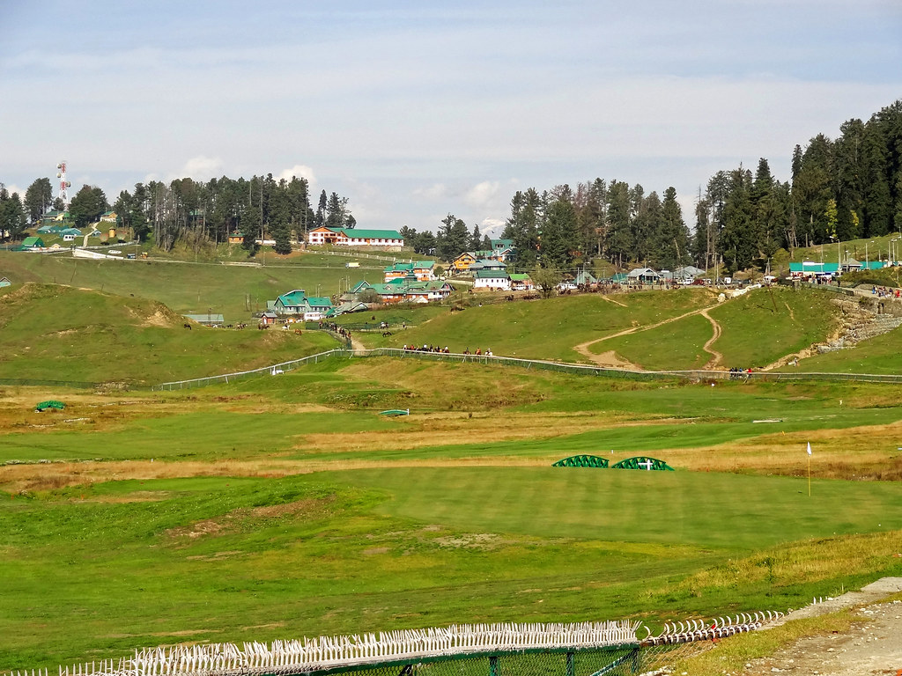Amarnath Special Itinerary
Day 1:
Srinagar - Pahalgam-The devotees start the Amarnath Yatra by road from Pahalgam. On you reach Srinagar, meet our representative who assists while you take a transfer to Pahalgam. Upon arrival in Pahalgam, take a transfer to the hotel and stay overnight.
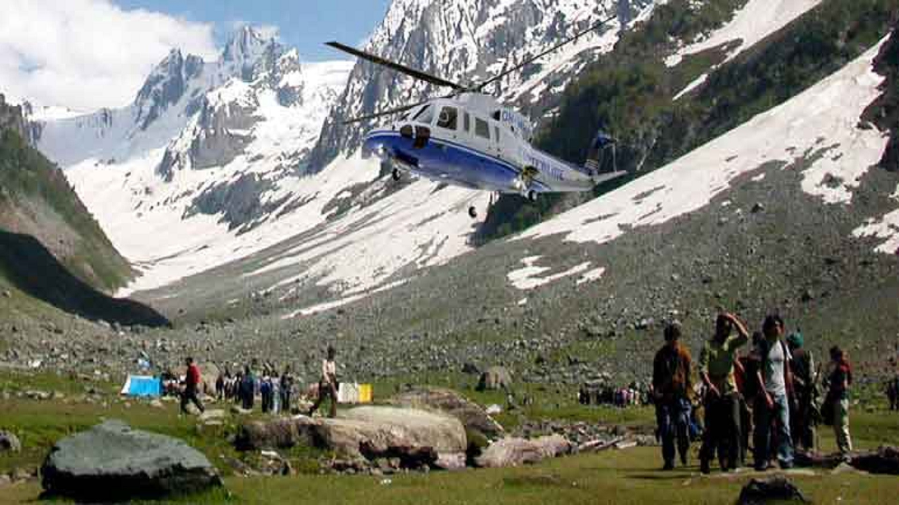Day 2:
Pahalgam - Chandanwari - Sheshnag by trek-This morning, leave Pahalgam and start driving towards Chandanwari. Pahalgam is the most popular base for all the treks. Located at an altitude of 2896 meters, Chandanwari is a small valley located at the junction of Sheshnag and Astanmarg. On reaching Chandanwari, start trekking to Sheshnag, located at a distance of around 18 kilometer. En-route special meals will be provided to you. Have your dinner and stay overnight in deluxe tents at Sheshnag.
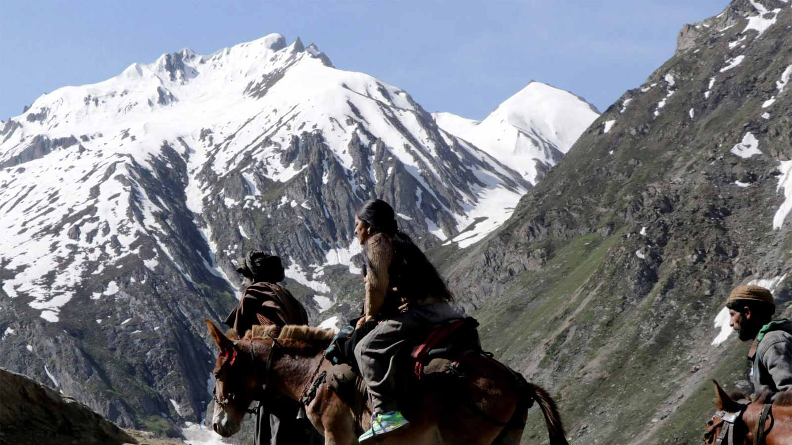Day 3:
Sheshnag - Panchtarni - Amarnath Cave - Panchtarni-This morning, start your trek to Panchtarni from Sheshnag (3657 meters). The trek covers a walk through Mahagunas Pass (3200 meters), and then gradually reaching to Panchtarni. On reaching Panchtarni, trek to Amarnath Cave which is located at a distance of 6 kilometers. After reaching, take a bath in Amarnath stream that flows outside the cave. The cave has an air of tranquility where the three massive Lingmas stand symbolizing Lord Shiva, Parvati and Ganesh. Later, start trekking back to Panchtarni. Have your dinner and stay overnight in your deluxe tents which come with complete bedding and hot water bottles.
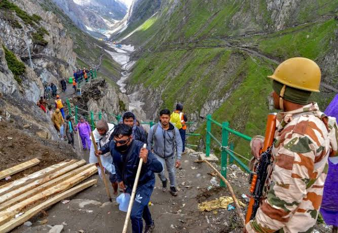Day 4:
Panchtarni - Chandanwari - Pahalgam-This morning, leave from Panchtarni. Have your lunch at Sheshnag and trek down to Chandanwari. On reaching Chandanwari, head towards Pahalgam. Stay overnight in Pahalgam.
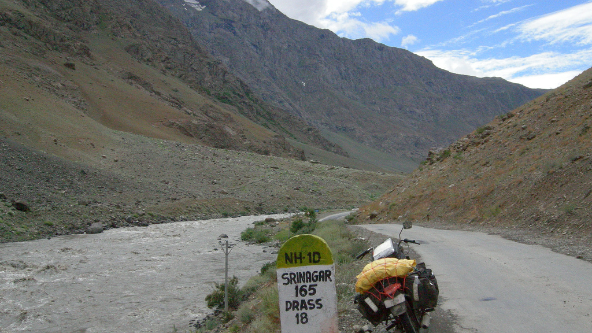Day 5:
Drive from Pahalgam to Srinagar-Have your breakfast in the morning and then leave for Pahalgam. On reaching Srinagar, check-in at your hotel/ houseboat. Begin the day with a sightseeing tour of Srinagar. Visit the famous Mughal Gardens of Srinagar. Visit the famous Nishat Bagh, an abode of pleasure which was built by Asif Khan, brother-in-law of Mughal emperor Jehangir in 1632 A.D. and Shalimar Bagh, an abode of love that was built by Jehangir for his wife Empress Nur Jehan. Later, visit a carpet weaving factory. After having your lunch, enjoy a Shikara ride on Dal Lake and visit floating and vegetable gardens. Later, get back to your deluxe houseboats. Have your dinner and stay overnight.
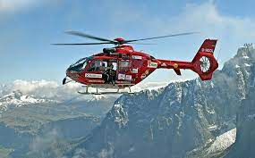Day 6:
Depart from Srinagar-This is the last day of Amarnath Yatra. After having your breakfast, take a transfer to Srinagar Airport/ Bus Stand. On reaching connect with your onward journey.
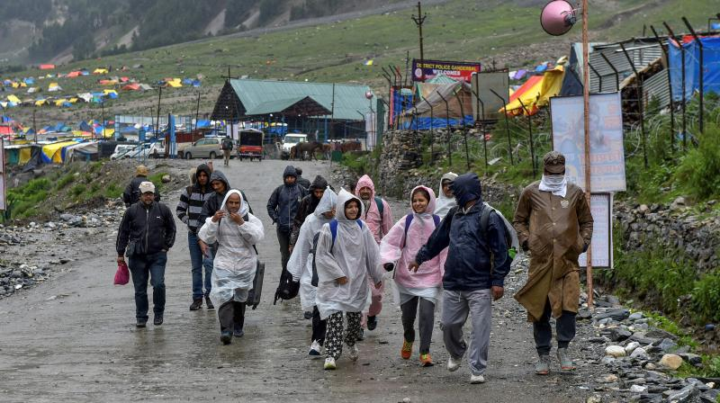Page 2
Book Now
Computer lessons
 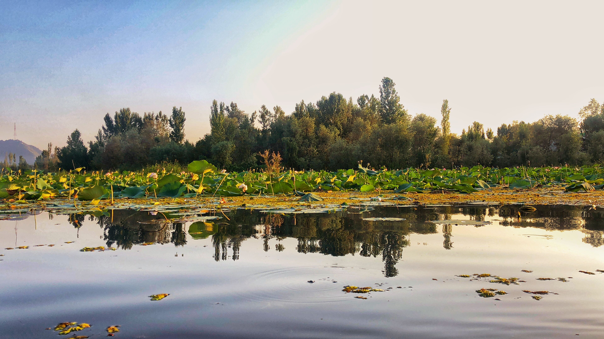
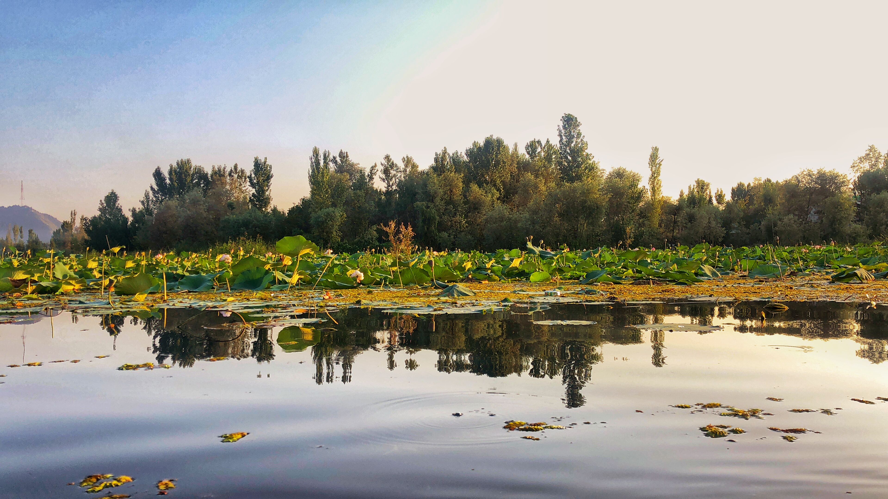
| Pack | Wifi | Meal | Total |
|---|---|---|---|
| Deluxe | Yes | Yes | 30000 |
| Economical | Yes | No | 15000 |
| Student Pack | No | No | 10000 |